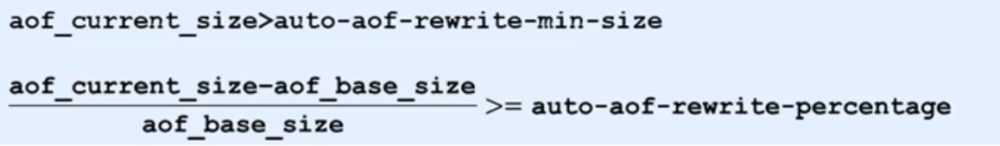

Redis
2.Jedis
- Java程序操作Redis的工具
- Jedis
- SpringData Redis
- Lettuce
2.1Jedis入门程序
pom.xml
1
2
3
4
5<dependency>
<groupId>redis.clients</groupId>
<artifactId>jedis</artifactId>
<version>2.9.0</version>
</dependency>JedisTest
1
2
3
4
5
6
7
8
9
10
11
12
13
14
15
16
17package top.carpenter;
import org.junit.Test;
import redis.clients.jedis.Jedis;
public class JedisTest {
@Test
public static void main(String[] args) {
// 1.连接Redis
Jedis jedis = new Jedis("127.0.0.1", 6379);
// 2.操作Redis——与终端操作方法一致
jedis.set("name","carpenter");
System.out.println(jedis.get("name"));
// 3.关闭连接
jedis.close();
}
}
2.2Jedis读写redis数据
- 案例：服务调用次数控制
- 服务免费开放给企业试用，对试用用户的使用行为进行限速，限制每个用户每分钟最多发起10次调用
- 案例要求
①设定A、B三个用户
②A用户限制10次/分调用, B用户限制30次/分调用
1 | package top.carpenter; |
2.3Jedis连接池
JedisPool: Jedis提供的连接池技术poolConfig:连接池配置对象host:redis服务地址port:redis服务端口号
1
2
3public JedisPool (GenericObjectPoolConfig poolConfig, String host,int port) {
this(poolConfig, host, port, 2000，(String)null, 0,(String) null);
}实现
1
2
3
4
5
6
7
8
9
10
11
12
13
14
15
16
17
18
19
20
21
22
23
24
25
26
27
28
29
30package top.carpenter;
import redis.clients.jedis.Jedis;
import redis.clients.jedis.JedisPool;
import redis.clients.jedis.JedisPoolConfig;
import java.util.ResourceBundle;
public class JedisUtils {
private static JedisPool jp = null;
private static String host = null;
private static int port;
private static int maxTotal ;
private static int maxIdle;
static {
ResourceBundle rb = ResourceBundle.getBundle("redis" );
host = rb. getString("redis.host");
port = Integer.parseInt(rb. getString("redis.port"));
maxTotal = Integer.parseInt(rb. getString( "redis.maxTotal"));
maxIdle = Integer. parseInt(rb. getString( "redis.maxIdle"));
JedisPoolConfig jpc = new JedisPoolConfig();
jpc.setMaxTotal (maxTotal);
jpc.setMaxIdle(maxIdle);
jp = new JedisPool(jpc ,host,port);
}
public static Jedis getJedis() {
return jp.getResource();
}
}
3.基于Linux的Redis
3.1Redis启动
默认配置启动【企业开发不用】
1
2redis-server
redis-server --port 6380 [更换端口启动]1
2
3redis-cli
redis-cli -p 6380 [更换端口启动]
redis-cli -h 127.0.0.1 [更换host]使用配置文件启动
1
redis-server config/redis-6380.conf
redis.conf1
2
3
4
5
6
7
8以守护进程方式启动，redis将以服务的形式存在，日志不再打印到命令窗口
daemonize yes
设定当前服务启动端口号
port 6380
设定当前服务文件保存位置，包含日志文件、持久化文件(后面详细讲解)等
dir "/[自定义目录]/redis/data"
设定日志文件名，便于查阅
logfile "***.log ”配置文件
dbfilename dump.rdb说明：设置本地数据库文件名，默认值为 dump.rdb- 经验：通常设置为
dump-端口号.rdb
- 经验：通常设置为
dir说明：设置存储.rdb文件的路径- 经验：通常设置成存储空间较大的目录中，目录名称data
rdbcompression yes说明：设置存储至本地数据库时是否压缩数据，默认为 yes，采用 LZF 压缩- 经验：通常默认为开启状态，如果设置为no，可以节省 CPU 运行时间，但会使存储的文件变大（巨大）
rdbchecksum yes说明：设置是否进行RDB文件格式校验，该校验过程在写文件和读文件过程均进行- 经验：通常默认为开启状态，如果设置为no，可以节约读写性过程约10%时间消耗，但是存储一定的数据损坏风险
stop-writes-on-bgsave-error yes说明：后台存储过程中如果出现错误现象，是否停止保存操作- 经验：通常默认为开启状态
appendonly yes|no说明：是否开启AOF持久化功能- 默认为不开启状态
appendfsync always|everysec|no说明：AOF写数据策略appendfilename filename说明：AOF持久化文件名，默认文件名appendonly.aof- 建议配置为
appendonly-端口号.aof
- 建议配置为
4.Redis持久化
什么是持久化
- 利用永久性存储介质将数据进行保存，在特定的时间将保存的数据进行恢复的工作机制称为持久化
为什么要进行持久化
防止数据的意外丢失，确保数据安全性
持久化过程保存什么
- 将当前数据状态进行保存，快照形式，存储数据结果，存储格式简单，关注点在数据
- 将数据的操作过程进行保存，日志形式，存储操作过程，存储格式复杂，关注点在数据的操作过程
4.1RDB方案
4.1.1RDB启动方式——save指令
手动执行一次保存操作
1
save
本地生成
***.rdb的文件，保存生产的快照信息注意: save指令的执行会阻塞当前Redis服务器，直到当前RDB过程完成为止，有可能会造成长时间阻塞，线上环境不建议使用。
4.1.2RDB启动方式 —— bgsave指令命令
手动启动后台保存操作，但不是立即执行
1
bgsave
注意: bgsave命令是针对save阻塞问题做的优化。Redis内部所有涉及到RDB操作都采用bgsave的方式，save命令可以放弃使用。
4.1.3RDB启动方式——save配置
满足限定时间范围内key的变化数量达到指定数量即进行持久化
1
save second changes
second：监控时间范围
changes：监控key的变化量
位置：在conf文件中进行配置
注意：
- save配置要根据实际业务情况进行设置，频度过高或过低都会出现性能问题，结果可能是灾难性的
- save配置中对于second与changes设置通常具有互补对应关系，尽量不要设置成包含性关系
- save配置启动后执行的是bgsave操作
4.1.4对比
| 方式 | save指令 | bgsave指令 |
|---|---|---|
| 读写 | 同步 | 异步 |
| 阻塞客户端指令 | 是 | 否 |
| 额外内存消耗 | 否 | 是 |
| 启动新进程 | 否 | 是 |
4.1.5RDB特殊启动形式
全量复制
- 在主从复制中详细讲解
服务器运行过程中重启
1
debug reload
关闭服务器时指定保存数据
1
shutdown save
4.1.6优点 & 缺点
RDB优点
- RDB是一个紧凑压缩的二进制文件，存储效率较高
- RDB内部存储的是redis在某个时间点的数据快照，非常适合用于数据备份，全量复制等场景
- RDB恢复数据的速度要比AOF快很多
- 应用：服务器中每X小时执行bgsave备份，并将RDB文件拷贝到远程机器中，用于灾难恢复。
Rdb缺点
- RDB方式无论是执行指令还是利用配置，无法做到实时持久化，具有较大的可能性丢失数据
- bgsave指令每次运行要执行fork操作创建子进程，要牺牲掉一些性能
- Redis的众多版本中未进行RDB文件格式的版本统一，有可能出现各版本服务之间数据格式无法兼容现象
4.2AOF方案
4.2.1引入
- RDB存储的弊端
- 存储数据量较大，效率较低【基于快照思想，每次读写都是全部数据，当数据量巨大时，效率非常低】
- 大数据量下的IO性能较低
- 基于fork创建子进程，内存产生额外消耗
- 宕机带来的数据丢失风险
- 解决思路
- 写全数据，仅记录部分数据
- 改记录数据为记录操作过程
- 对所有操作均进行记录，排除丢失数据的风险
4.2.2AOF概念
以独立日志的方式记录每次写命令，重启时再重新执行AOF文件中命令达到恢复数据的目的。与RDB相比可以简单描述为改记录数据为记录数据产生的过程
作用：解决了数据持久化的实时性，目前已经是Redis持久化的主流方式
AOF写数据三种策略(appendfsync)
always(每次）每次写入操作均同步到AOF文件中，数据零误差，性能较低，不建议使用。everysec（每秒）每秒将缓冲区中的指令同步到AOF文件中，数据准确性较高，性能较高，建议使用，也是默认配置 在系统突然宕机的情况下丢失1秒内的数据no（系统控制）由操作系统控制每次同步到AOF文件的周期，整体过程不可控
4.2.3AOF重写
- 随着命令不断写入AOF，文件会越来越大，为了解决这个问题，Redis引入了AOF重写机制压缩文件体积。
- AOF文件重写：将Redis进程内的数据转化为写命令同步到新AOF文件的过程。【将对同一个数据的若干个条命令执行结果转化成最终结果数据对应的指令进行记录。】
- 作用
- 降低磁盘占用量，提高磁盘利用率
- 提高持久化效率，降低持久化写时间，提高IO性能
- 降低数据恢复用时，提高数据恢复效率
4.2.4AOF重写规则
- 进程内已超时的数据不再写入文件
- 忽略无效指令，重写时使用进程内数据直接生成，这样新的AOF文件只保留最终数据的写入命令
- 如
del key1、 hdel key2、srem key3、set key4 111、set key4 222等
- 如
- 对同一数据的多条写命令合并为一条命令
- 如
lpush list1 a、lpush list1 b、 lpush list1 c可以转化为：lpush list1 a b c。 - 为防止数据量过大造成客户端缓冲区溢出，对list、set、hash、zset等类型，每条指令最多写入64个元素
- 如
4.2.5AOF重写方式
手动重写
1
bgrewriteaof
bgrewriteaof指令工作原理

自动重写
自动重写触发条件设置
1
2auto-aof-rewrite-min-size [size]
auto-aof-rewrite-percentage [percentage]自动重写触发比对参数（ 运行指令info Persistence获取具体信息 ）
1
2aof_current_size
aof_base_size自动重写触发条件

4.2.6AOF工作流程
4.3AOF & RDB对比
- 对数据非常敏感，建议使用默认的AOF持久化方案
- AOF持久化策略使用everysecond，每秒钟fsync一次。该策略redis仍可以保持很好的处理性能，当出现问题时，最多丢失0-1秒内的数据。
- 注意：由于AOF文件存储体积较大，且恢复速度较慢
- 数据呈现阶段有效性，建议使用RDB持久化方案
- 数据可以良好的做到阶段内无丢失（该阶段是开发者或运维人员手工维护的），且恢复速度较快，阶段 点数据恢复通常采用RDB方案
- 注意：利用RDB实现紧凑的数据持久化会使Redis降的很低，慎重总结：
- 综合比对
- RDB与AOF的选择实际上是在做一种权衡，每种都有利有弊
- 如不能承受数分钟以内的数据丢失，对业务数据非常敏感，选用AOF
- 如能承受数分钟以内的数据丢失，且追求大数据集的恢复速度，选用RDB
- 灾难恢复选用RDB
- 双保险策略，同时开启 RDB 和 AOF，重启后，Redis优先使用 AOF 来恢复数据，降低丢失数据的量
4.4持久化应用场景
Tips 1：redis用于控制数据库表主键id，为数据库表主键提供生成策略，保障数据库表的主键唯一性【从DB读取最大】Tips 3：redis应用于各种结构型和非结构型高热度数据访问加速【从DB读取】Tips 4：redis 应用于购物车数据存储设计【从DB读取】- Tips 5：redis 应用于抢购，限购类、限量发放优惠卷、激活码等业务的数据存储设计
Tips 6：redis 应用于具有操作先后顺序的数据控制【用MQ】Tips 7：redis 应用于最新消息展示【用RQ】Tips 9：redis 应用于同类信息的关联搜索，二度关联搜索，深度关联搜索【从DB读取】Tips 12：redis 应用于基于黑名单与白名单设定的服务控制【长期】【从DB读取】- Tips 12：redis 应用于基于黑名单设定的服务控制【短期】
- Tips 13：redis 应用于计数器组合排序功能对应的排名
Tips 15：redis 应用于即时任务/消息队列执行管理【用MQ】- Tips 16：redis 应用于按次结算的服务控制
5.Redis事务
概念
- redis事务就是一个命令执行的队列，将一系列预定义命令包装成一个整体（一个队列）。当执行时，一次性 按照添加顺序依次执行，中间不会被打断或者干扰。
- 一个队列中，一次性、顺序性、排他性的执行一系列命令
事务的基本操作
开启事务
设定事务的开启位置，此指令执行后，后续的所有指令均加入到事务中
1
multi
执行事务
设定事务的结束位置，同时执行事务。与multi成对出现，成对使用
1
exec
取消事务
终止当前事务的定义，发生在multi之后，exec之前
1
discard
注意：加入事务的命令暂时进入到任务队列中，并没有立即执行，只有执行exec命令才开始执行
事务的工作流程
注意事项
定义事务的过程中，命令格式输入错误怎么办？
- 语法错误：命令书写格式有误
- 处理结果 如果定义的事务中所包含的命令存在语法错误，整体事务中所有命令均不会执行。包括那些语法正确的命令。
定义事务的过程中，命令执行出现错误怎么办？
- 运行错误：命令格式正确，但是无法正确的执行。例如对list进行incr操作
- 能够正确运行的命令会执行，运行错误的命令不会被执行
已经执行完毕的命令对应的数据不会自动回滚，需要程序员自己在代码中实现回滚。
基于特定条件的事务执行
多个客户端有可能同时操作同一组数据，并且该数据一旦被操作修改后，将不适用于继续操作
在操作之前锁定要操作的数据，一旦发生变化，终止当前操作
对 key 添加监视锁，在执行exec前如果key发生了变化，终止事务执行
1
watch key1 [key2……]
watch 不能在multi命令之后
取消对所有 key 的监视
1
unwatch
业务场景
- redis 应用基于状态控制的批量任务执行
6.Redis 删除策略
6.1过期数据
- Redis是一种内存级数据库，所有数据均存放在内存中，内存中的数据可以通过TTL指令获取其状态
- XX ：具有时效性的数据
- -1 ：永久有效的数据 ：已经过期的数
- -2 ：已经过期的数据 或 被删除的数据 或 未定义的数据
6.2数据删除策略
6.2.1时效性数据的存储结构
6.2.2数据删除策略的目标
在内存占用与CPU占用之间寻找一种平衡，顾此失彼都会造成整体redis性能的下降，甚至引发服务器宕机或内存泄露
6.2.3定时删除
- 创建一个定时器，当key设置有过期时间，且过期时间到达时，由定时器任务立即执行对键的删除操作
- 优点：节约内存，到时就删除，快速释放掉不必要的内存占用
- 缺点：CPU压力很大，无论CPU此时负载量多高，均占用CPU，会影响redis服务器响应时间和指令吞吐量
- 总结：用处理器性能换取存储空间 （拿时间换空间）
6.2.4惰性删除
数据到达过期时间，不做处理。等下次访问该数据时
- 如果未过期，返回数据
- 发现已过期，删除，返回不存在
优点：节约CPU性能，发现必须删除的时候才删除
缺点：内存压力很大，出现长期占用内存的数据
总结：用存储空间换取处理器性能 （拿时间换空间）
6.2.5定期删除
Redis启动服务器初始化时，读取配置server.hz的值，默认为10
每秒钟执行server.hz次
serverCron() —->
databasesCron() —->
activeExpireCycle()activeExpireCycle()对每个expires[*]逐一进行检测，每次执行250/server.hzms对某个
expires[*]检测时，随机挑选W个key检测- 如果key超时，删除key
- 如果一轮中
删除的key的数量>W*25%，循环该过程 - 如果一轮中
删除的key的数量≤W*25%，检查下一个expires[\*]，0-15循环
W=ACTIVE_EXPIRE_CYCLE_LOOKUPS_PER_LOOP属性值参数
current_db用于记录activeExpireCycle()进入哪个expires[*]执行。如果activeExpireCycle()执行时间到期，下次从current_db继续向下执行周期性轮询redis库中的时效性数据，采用随机抽取的策略，利用过期数据占比的方式控制删除频度
- 特点1：CPU性能占用设置有峰值，检测频度可自定义设置
- 特点2：内存压力不是很大，长期占用内存的冷数据会被持续清理
总结：周期性抽查存储空间（随机抽查，重点抽查）

6.3逐出算法
Redis使用内存存储数据，在执行每一个命令前，会调用
freeMemoryIfNeeded()检测内存是否充足。逐出算法：如果内存不满足新加入数据的最低存储要求，redis要临时删除一些数据为当前指令清理存储空间。清理数据的策略即为逐出算法。
注意：逐出数据的过程不是100%能够清理出足够的可使用的内存空间，如果不成功则反复执行。当对所有数据尝试完毕后，如果不能达到内存清理的要求，将出现错误信息。
最大可使用内存，占用物理内存的比例，默认值为0，表示不限制
1
maxmemory []
生产环境中根据需求设定，通常设置在50%以上。
每次选取待删除数据的个数，选取数据时并不会全库扫描，导致严重的性能消耗，降低读写性能。因此采用随机获取数据的方式作为待检测删除数据
1
maxmemory-samples []
删除策略，达到最大内存后的，对被挑选出来的数据进行删除的策略
1
maxmemory-policy []
- 检测易失数据（可能会过期的数据集server.db[i].expires ）
- ① volatile-lru：挑选最近最少使用的数据淘汰
- ② volatile-lfu：挑选最近使用次数最少的数据淘汰
- ③ volatile-ttl：挑选将要过期的数据淘汰
- ④ volatile-random：任意选择数据淘汰
- 检测全库数据（所有数据集server.db[i].dict ）
- ⑤ allkeys-lru：挑选最近最少使用的数据淘汰
- ⑥ allkeys-lfu：挑选最近使用次数最少的数据淘汰
- ⑦ allkeys-random：任意选择数据淘汰
- 放弃数据驱逐
- ⑧ no-enviction（驱逐）：禁止驱逐数据（redis4.0中默认策略），会引发错误OOM（Out Of Memory）
- 检测易失数据（可能会过期的数据集server.db[i].expires ）
原文作者: 掘金木匠
原文链接: http://goldcarpenter.github.io/2020/04/04/Redis_Part2/
版权声明: 转载请注明出处(必须保留作者署名及链接)